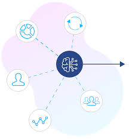
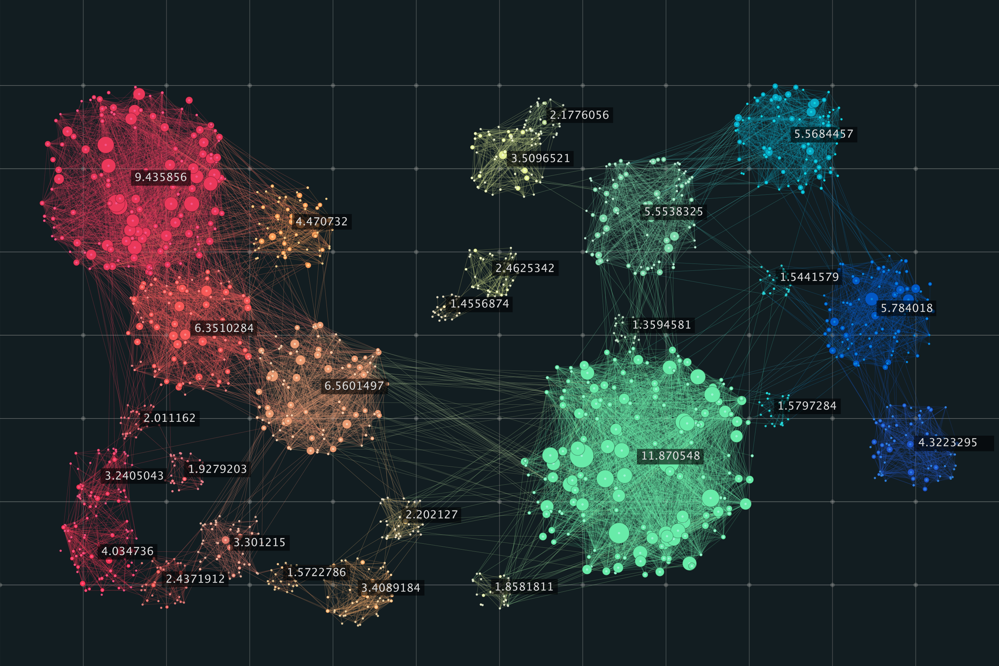
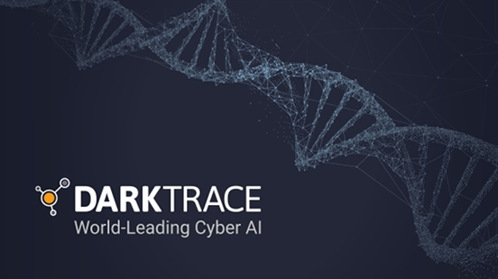
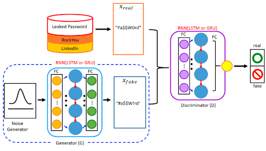
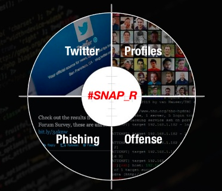
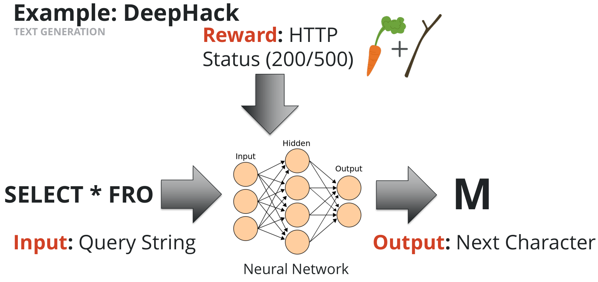

Introduction
Advances in information technology has resulted in increased crime in cyberspace. Increased usage in internet infrastructure means there are more people online than ever before. This ranges from businesses using the internet for storing information and conducting transactions with customers to individuals using the internet to store and exchange data. The internet has grown from it's infancy to the primary infrastructure connecting the world. With more people online than ever before, criminals have used this opportunity to exploit weak points in internet infrastructure to their benefit. This may be in the form of confidentiality, reliability or integrity attacks. The increase in criminal activity online has led to the question of attacks changing from "if" to "when" with attacks on systems being inevitable. Cybersecurity professionals have to now prepare for a plethora of inevitable automated attacks. Mere sensors and detectors are not sufficient for monitoring and protection of internet infrastructures. There is now a need for more sophisticated technology that can model normal behaviors and detect abnormal ones. These cyber security systems need to be flexible, adaptable,robust, able to detect a wide variety of threats and make intelligent decisions in real-time.
With the sheer amount of cyber attacks, mere human intervention is simply not sufficient for attack analysis and appropriate response in time. The attacks themselves are carried out by intelligent agents such as computer worms and viruses hence intelligent semi-autonomous agents that can detect, evaluate, and respond to cyber attacks are required to combat them. These computer-generated forces will have to be able to manage the entire process of attack response in a timely manner. This involves determining what type of attack is occurring, what the targets are and what is the appropriate response, as well as how to prioritize and prevent secondary attacks.
Cyber security threats are no longer localized. They are now a global menace that poses a threat to any computer systems around the world at a growing rate. There were times when only a select group of educated specialists could commit cyber crimes. But today with the growth of the internet, almost anyone has access to the tools for committing these crimes. Conventional rule based systems that involve hard-wired logic are no longer effective against combating constantly evolving cyber attacks. Therefore now more than ever there is a need for applying methods of Artificial Intelligence (AI) that provide flexibility and learning capability to software which will not just detect and correct but also assist humans in fighting cyber crimes. Computing methods of AI such as Computational Intelligence, Neural Networks, Intelligent Agents, Artificial Immune Systems, Machine Learning, Data Mining, Pattern Recognition, Fuzzy Logic, Heuristics, etc. have been increasingly playing an important role in cyber crime detection and prevention. AI can be used to build computing solutions capable of adapting to their context of use, using the methods of self-management, self-tuning, self-configuration, self-diagnosis, and self healing. Due to the above reasons, AI techniques seem very promising in improving security measures for cyber space.
Defining Artificial intelligence (AI)
Artificial intelligence or AI is the ability of a digital logic to perform tasks commonly associated with intelligent beings. The term is frequently applied to computer systems that can enact intellectual processes characteristic of humans, such as the ability to reason, discover meaning, generalize, or learn from past experience. Computers are able to do this by analysing huge quantities of data related to a specific task thereby understanding every possible outcome of that task. Such algorithms are designed to be good at seeing complex patterns in data that cannot be seen by a single biological entity. This way computer algorithms can predict a specific outcome given a specific input for the specific task for which a large dataset is available. This essentially makes AI a method for solving complex problems that cannot be solved without applying some intelligence.
One of the most powerful tools used in AI are Neural Networks. Neural nets consist of artificial neurons that mimic neurons in the human brain. When these building blocks are combined, they can learn and solve complex problems. Neural networks have the ability to learn, process distributed information, self-organize, adapt and are applicable to solving problems that have a high degree of ambiguity. Neural networks consisting of a large number of artificial neurons, can provide the functionality of massive parallel learning and decision-making with high speed, which makes them suitable for recognizing patterns and therefore responding to cybersecurity attacks.

Commonly used AI Techniques
Any AI technology used needs to be able to provide certain basic functionality towards cybersecurity. The first being real-time intrusion detection while the attack is in progress or immediately afterwards. It is important that any autonomous detection has a low false positive rate. Human supervision should be minimal, and continuous operation should be ensured. An important function is the ability to self-monitor in order to detect attackers’ attempts to change the system. The system should be able to adapt to changes and user behavior over time.
Regression: In this simple machine learning technique, the value of a dependent feature is estimated based on the values of the independent features. These dependent and independent features are structured in the form of a dataset of past events. Regression algorithms learn from existing data sets of past events and use the knowledge gained to handle new events. Fraud detection is an aspect of cybersecurity where regression can be used successfully. Once a model is created from the past transaction data, based on observed features of the current transactions, it can be used to determine fraudulent transactions. Machine learning provides Linear regression, Polynomial regression, Support vector machine, Decision tree, Random forest and other regression methods for regression analysis.
Classification: This is a predictive model where a class label is predicted for a given example of input data. It is a commonly used machine learning tool that in cybersecurity can help with spam detection. ML based classifiers involve discriminating a given email message as spam or not. A spam filter classifier is able to separate spam messages from non-spam messages. Machine learning techniques for classification include K-Nearest Neighbors, Logistic Regression, Support Vector Machine, Naïve Bayes,Decision Tree,Random Forest Classification. Large collections of labeled data can be leveraged to create more complex deep Learning classification models involving Convolutional Neural Networks (CNN), Restricted Boltzmann Machines(RBM), Recurrent Neural Networks (RNN), or Long-Short Term Memory (LSTMs) cells. The complex models are designed to perform feature extraction using a densely connected neural network that can be efficiently trained using large dataset and be used for solving complex tasks.
Clustering: Both regression and classification are supervised learning models, for which intricately labeled datasets are essential. Clustering is an unsupervised learning model, which extracts patterns from the data even when the data is not labeled. Groups of similar events constitute a cluster as they share common features that define certain patterns. This sort of unsupervised pattern detection is very useful for cybersecurity as it is very hard to come by labelled datasets and most data is unlabelled. Most unlabelled attack data in cybersecurity have intrinsic patterns that cannot be perceived by humans. The use of clustering can help extract patterns in applications such as forensic analysis, anomaly detection, malware analysis. Clustering algorithms that can be used in cybersecurity include K-means, KMedoids, DBSCAN, Gaussian Mixture Model, Agglomerative and Neural network based Self Organizing Maps.

- 
- 
AI in automated defence
- 
There are plenty of resources that show AI techniques being already used in combating cyber crimes. This section will briefly present related work and some existing applications of AI techniques to cyber security.
Vectra’s AI-based threat detection and response platform Cognito collects and stores network metadata and enriches it by adding unique security insights. This metadata along with machine learning techniques are used to detect and prioritize attacks in real time. Cognito has helped detect and block multiple man-in-the-middle attacks, and halt cryptomining schemes in Asia. Cognitoalso managed to find command-and-control malware that had been hiding for several years.
With the rapid growth in the use of personal mobile devices, there is a need now more than ever for automated security techniques to keep up with the rapid growth. Zimperium and MobileIron Zimperium and MobileIron announced a collaboration to help organizations adopt mobile anti-malware solutions incorporating artificial intelligence. The integration of Zimperium’s AI-based threat detection with the MobileIron’s compliance and security engine can tackle challenges such as network, device, and application threats.Organizations can use this AI-based threat detection software to protect personal mobile devices. AI-based crime analysis tools like the California-based Armorway use AI and game theory to predict terrorist threats. The Coast Guard uses Armorway for port security in Los Angeles, Boston and New York.
Darktrace’s Enterprise Immune System is based on machine learning technology. The platform uses machine learning to model the behaviors of every device, user, and network to learn specific patterns. Darktrace automatically identifies any anomalous behavior and alerts the companies using its software in real time. Energy Saving Trust was one such company using Darktrace software that was able to detect numerous anomalous activities as soon as they occurred and alert the security team to carry out further investigations, while mitigating any risk posed before real damage is done.
Paladon’s threat hunting service leverages data science and machine learning capabilities to create cybersecurity software. This tackles cyber security issues such as data exfiltration, advanced targeted attacks, ransomware, malware, zero-day attacks, social engineering, and encrypted attacks. Paladon’s AI-based Managed Detection and Response Service (MDR) service is used by the global bank in advancing threat detection and response capabilities.
An interesting application of neural networks is security screening. To assist in security screening, the United States Department of Homeland Security has developed a system called AVATAR that screens body gestures and facial expressions. AVATAR uses neural networks to pick up small variations of facial expressions and body gestures that may raise suspicion. The system uses a virtual face that asks questions. It monitors how answers as provided as well as differences in voice tone. Since the neural network is trained on a dataset of answers and tones of people who are known to lie and know to tell the truth, the answers from a specific individual are compared against elements that indicate that someone might be lying. This could be used in a myriad of security settings to flag people suspected of lying to be further evaluated by human interrogators.
AI in automated offence
From the previous section we saw how defensive AI algorithms are gaining traction and are becoming more widely used. While defensive AI can be highly effective there are offensive AI techniques being developed that cause just as much harm as defensive ones do good. This section goes over a few offensive techniques currently out there.
Next-generation password brute-force attack uses an open-source ML algorithm, called Torch-rnn, for character-level language modeling to generate new candidate passwords by following a similar pattern based on prior passwords.To do this the RNN was trained using past captured password sequences and can be used by attackers to generate new passwords one character at a time. The predictions of these RNN’s will allow attackers to come up with novel passwords that have a high likelihood of being an actual password that a user has used. The character-level language modeling using the RNN learns patterns from the past database of user specific passwords it is presented and learns patterns based on individual users. The way the trained model then predicts the next character in a sequence, by generating new passwords in a specific style. This can be used to construct the attacking dictionary in a more intelligent way, by self-generating an infinite number of possible passwords and inserting them in real time.
The Social Network Automated Phishing with Reconnaissance (SNAP_R) system is an automated end-to-end spear phishing generator using Twitter as a target communication channel. Spear phishing is used to target specific individuals with specific attacks rather than attacking a lot of individuals with a single attack. The goal of this offensive technique is to automate the spear phishing process in order to create targeted spear-phishing attacks at a much larger scale with high success rates. To do this, k-means clustering methods are used by an author to segment lists of Twitter accounts into groups based on their public profiles and their level of social interaction, such as metrics for numbers of retweets and followers in order to discover the high value targets. When targets are determined, the automated attack spreads tailored, machine-generated posts with an embedded URL. The URL contains articles that the specific user is found to be interested using a trained machine learning model. NLP approaches are utilized to identify topics the target is interested in. This is used to generate the content of the posts, both Markov models and Long Short-Term Memory Networks (LSTMs) are employed, which learn to predict the next word from previous context in the posting history of the target.
DeepHack is an open-source AI-based hacking tool, which learns to break into the databases of web applications through reinforcement learning without any prior knowledge of the system. The goal is to augment existing hacking tools trying to learn how to hack by taking advantage of the fuzzing logic to automate tasks. The neural network takes an incomplete sequence string and decides what the next character in this sequence is, based on the data that it has seen in the past. The training dataset uses labeled data to understand the syntax of SQL queries. Every time it sends a request and takes actions, it is rewarded with a Boolean-based response from the remote server. This can give new knowledge to the model about the target system, whether the data is correct or not. Being able to ask the server many times and trying to learn what letter should come next in the sequence until the desired information is extracted from the database can optimize the taken decisions. The whole process is repeated iteratively by brute forcing character by character.
- 
- 
- 
Current limitations
There are certain limitations tha AI technology currently possesses that prevent it from becoming a mainstream security tool. The first limitation comes in the form of a resource bottleneck. Organizations require lots of resources including data, memory, and computing power to successfully employ AI powered cybersecurity features. So until these features become more mainstream, it will not be financially viable for companies with small cybersecurity teams to switch from their traditional rule base systems to automated AI systems. The lifeblood of artificial intelligence algorithms is data. Security companies need to use a variety of data sets of anomalies and malware codes to train an AI system to accomplish a single task. Getting accurate, labelled data sets require a lot of resources, and time which companies without a dedicated data science team cannot afford. As we saw in the discussion of AI being used for offensive purposes, hackers are just as likely to use AI to make better malware as security professionals are to use AI in making defensive strategies AI powered malware can be extremely dangerous because it can develop more advanced attacks by learning from existing AI tools. Neural fuzzing can be used to detect software vulnerabilities by using large quantities of random data sets. A malicious actor can combine neural fuzzing tactically with neural networks to gather information and learn weaknesses of a target software system. As it has always been in cybersecurity, it is a constant race between attackers and security professionals with either one or the other being slightly ahead at a given time. Just like other machine learning algorithms, security based machine learning algorithms are plagued by high false positive rates. This is because it is hard to create a well defined dataset of what is an attack and what is acceptable behaviour. It is hard to draw these lines because what is normal behaviour one day can be considered suspicious behavior another day when it happens in different circumstances. This makes it hard to design a machine learning algorithm that can differentiate between the two and identify anomalous activity as normal behavior may easily and readily change. If the detection and prevention machine learning system inaccurately flags legitimate activity as malicious, the results can be unfortunate and difficult to correct as it will attempt to stop the activity or change it. Due to its infancy and black box approach, AI base cybersecurity systems come under heavy scrutiny when it comes to their legality. It is hard to design Intrusion detection systems that abide by legal regulations, security requirements and service-level agreements in the real world.

The human element
It is essential for cybersecurity professionals to trust that the automations algorithms actually work and the only way to do this is to understand the context of how security alert classifications are happening. This can be achieved using machine learning techniques such as NLP that better understand the context of security events. Visualization also helps demystify the working of black box machine learning algorithms. Rather than just detecting single attacks, cybersecurity professionals can use visualizations techniques to understand the bigger picture to better understand vulnerabilities in the system. In the end the algorithms themselves act as tools to produce better detection results. It is crucial that cybersecurity experts and management understand this so the two teams can be on the same page. This helps cybersecurity professionals building AI automation techniques not get lost in the weeds when it comes to the algorithms themselves and understand the main goal they are working toward. It is important for management to see the bigger picture so they can trust the black box AI algorithms being used to secure their company. Understanding the bigger picture of using AI in cybersecurity requires considering the human element of cybersecurity teams. Only by doing this can AI be properly integrated into the corporate cybersecurity setting.
There is an interesting blog written by Srini Tummalapenta, a CTO at IBM . The blog talks about how the purpose of AI is to improve the quality of life for the human security analyst. This paints a clear picture of the social and ethical impact of AI in cybersecurity. The goal of AI is to improve the quality of life of security analysts not to replace their roles. Using AI techniques gives analysts more efficient analysis tools so their job is easier and faster. As a result of AI systems, analysts tasks have evolved to involve auditing AI systems to make sure the black box algorithms function as intended making the right classifications. Analysts are also required to explain the functions of AI systems to clients. This showed how AI was actually helping evolve careers of security analysts.
An example of how AI techniques can be used in cybersecurity in the real world comes from how triage techniques can be used along with AI to make the detection process faster and efficient. The triage process is set up so a detection system only brings the most important threats to the attention of human cybersecurity professionals. This sort of triage is important to eliminate noisy alerts using the automated system so only actual threats can be brought to cybersecurity professionals. Various machine learning techniques can currently be used to weed out noisy alerts by automated systems. The goal is to improve automation techniques to detect more noise thereby reducing the load on human cybersecurity professionals.
Conclusion
Considering human limitations and the fact that computer viruses and worms are intelligent, cyber security networks require equally intelligent cyber representatives which will detect, evaluate and respond to cyber attacks in a timely manner. Dealing with intelligent cyber threats that have high computing capabilities with human cyber security responders is a flawed defensive strategy. It is evident that the best way to deal with autonomous offensive intelligence is with autonomy defensive intelligence. Any application of AI techniques in automated cyber defense will require a lot more planning and future research. One of the challenges is the collection of data in network-centric warfare. Having large labelle datasets will help mount a good defense against offensive network-centric attacks. A lot more research needs to be done before we are able to construct trustworthy and deployable intelligent representative systems that can manage distributed infrastructures. A wide range of both ethical and legal questions come to light with the degree of autonomy of this technology. Questions like “to what extent can an artificial neural network replace human judgment”, “to what degree do we want to allow technology to take human roles” or “what legal precedent can be applied to machines” will need to be answered
External Resources
- AI Applications in Cybersecurity with Real-Life Examples
- Weaponizing Data Science for Social Engineering: Automated E2E Spear Phishing on Twitter
- Weaponizing Machine Learning: Humanity Was Overrated Anyway
- How AI Can Make Cybersecurity Jobs Less Stressful and More Fulfilling
- Triage Attacks More Efficiently With AI for Cybersecurity
- Applications of artificial intelligence techniques to combat cybercrime: A review
- The AI-Based Cyber Threat Landscape: A Survey
- A Survey On Machine Learning For Cyber Security
- Neural Networks (Computational Intelligence)
- Regression in AI
- Classification in AI
- Vectra’s AI-based
- Zimperium and MobileIron
- Armorway
- Darktrace’s Enterprise Immune System
- AVATAR
- Artificial Intelligence-Based Password Brute Force Attacks